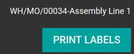

Connect a printer¶
Printer installation can be done in a few easy steps. The printer can be used to print receipts, labels, orders, or even reports from the different Odoo apps. In addition, printer actions can be assigned as an action on a trigger during the manufacturing process, or added onto a quality control point or a quality check.
Connection¶
The IoT box supports printers connected through USB, network connection, or Bluetooth. Supported printers are detected automatically, and appear in the Devices list of the IoT app.

Note
The printer can take up to two minutes to appear in the IoT app devices list.
Link printer¶
Link printer to work orders¶
Work Orders can be linked to printers, via a quality control point, to print labels for manufactured products.
In the Quality app, a device can be set up on a quality control point. To do that, go to the , and open the desired control point to which the printer will be linked.
Important
A Manufacturing Operation and Work Order Operation need to be attached to a quality control point before the Type field allows for the Print Label option to be selected.
From here, edit the control point, by selecting the Type field, and selecting Print Label from the drop-down menu of options. Doing so reveals a field called Device, where the attached device can be selected. Save the changes, if required.

The printer can now be used with the selected quality control point. When the quality control point is reached during the manufacturing process, the database presents the option to print labels for a specific product.
Tip
Quality control points can also be accessed by navigating to , then select the device. There is a Quality Control Points tab, where they can be added with the device.
Note
On a quality check detail form, the Type of check can also be specified to Print Label. To create new quality checks, navigate to .
Link a printer to a work center in the Manufacturing app¶
To link a printer to an action, it first needs to be configured on a work center. To do that, navigate to . From here, select the desired work center in which the printer will be used. Next, add the device in the IoT Triggers tab, under the Device column, by selecting Add a Line.
Then, the printer can be linked to either of the following options in the Actions drop-down menu: Print Labels, Print Operation, or Print Delivery Slip. A key can also be added to trigger the action.
Important
The first listed trigger on the form will be chosen first. So, the order matters, and these triggers can be dragged into any order.
Note
On the Work Order screen, a status graphic indicates whether the database is correctly connected to the printer.
See also
Link printer to reports¶
It’s also possible to link a type of report to a certain printer. In the IoT app, go to the Devices menu, and select the desired printer that needs to be configured.
From here, click Edit, go to the Printer Reports tab, and select Add a line. In the window that appears, check all the types of Reports that should be linked to this printer.

Now, each time Print is selected in the control panel, instead of downloading a PDF, a pop-up appears which displays all the printer(s) linked to the report. Then Odoo sends the report to the selected printer(s), and automatically prints it.
See also
Tip
Reports can also be configured in the Technical Menu while in debug mode. To do that, navigate to . From here, the individual report can be found in this list, where the IoT Device can be set on the report.